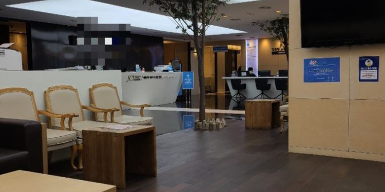

스마일라식수술 후기, 당일 하고 온 후기
대학생때부터 시력교정술을 받고싶었는데 수술하는게 무섭기도하고 시간도 애매해서 못하고있다가 최근에 병동 선생님들이 많이들 하셔서 나도 하기로 했다 병원은 선생님들 후기가 괜찮은 곳으로 갔다.
수술 전에 가지고 있던 고민과 검사 과정, 수술 직후의 경험과 이후의 생활까지 참고하세요.
대학생때부터 시력교정술을 받고싶었는데 수술하는게 무섭기도하고 시간도 애매해서 못하고있다가 최근에 병동 선생님들이 많이들 하셔서 나도 하기로 했다 병원은 선생님들 후기가 괜찮은 곳으로 갔다.
수술 후 집 가고 싶어지니까 꼭 미리 약 처방받으시고, 수술 동의서 읽고 사인하면 나머지 금액을 결제해요. 누리맘은 추가로 내는 자가혈청을 신청 안 했습니다. 제일 좋은 스마일라식 하는데 거기다 각막강화술도 하고요. 굳이 자가혈청까지는 안 해도 될 것 같았습니다.^^
눈 수술하니까 보안경이랑 모자는 필수겠죠?! 저는 전날에 미리 구매했습니다. 선글라스도 괜찮겠네요~ 수술시간은 5분 정도였고, 수술 하나도 안 아픕니다. 다들 '눈을 안 감고 어떻게 있지' 생각하잖아요? 마취 안약을 넣으면 눈을 안 깜빡여도 살 것 같은 느낌이 듭니다.
세시 정도에 수술을 했고 네시쯤 마쳤는데 당일은 마취 풀리고 엄청 아팠는데 밤 열두시 정도 되니까 서서히 괜찮아지더라고요ㅎㅎ 슬쩍 눈 떴는데 너무 잘보여서 진짜 기뻤어요. 다음날 일어났는데 통증은 하나도 없었고 정말 너무너무 잘보여서 신기했어요ㅠㅠㅜ 수술 전 시력이 마이너스 칠팔정도 였는데 지금 검사해보면 1.2정도 나와요ㅎㅎㅎ 안전하게 수술해주셔서 너무 감사할 따름입니당ㅎㅎ
SNS 후기 12월 27일 지방에서 친구와 함께 어렵게 시간내어 상경하여 수술했습니다. 수술 하기 전 두려움도 많았으나, 수술 후 지금은 수술하길 잘했구나 라는 생각이 앞섭니다. 3시30분 수술하고 회복시간을 거쳐 6시 안되서 마취 안약넣고 숙소로 가는 동안 통증을 못느꼈으나, 마취가 풀리니 딱 4시간 정말 너무 아팠는데, 다음날 일어났을때 안경쓴것처럼 눈에 보이는게 너무 신기하고, 그 아팠던 통증도 거의 사라지고, 마치 렌즈를 낀듯 약간 뻣뻣한 느낌만 들뿐 너무 좋았습니다.